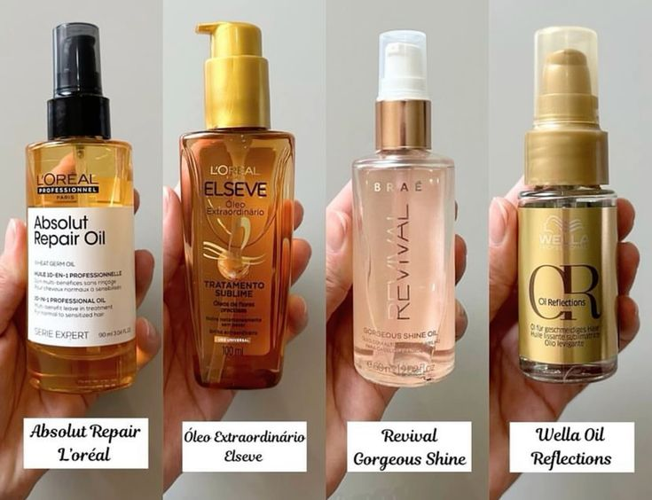
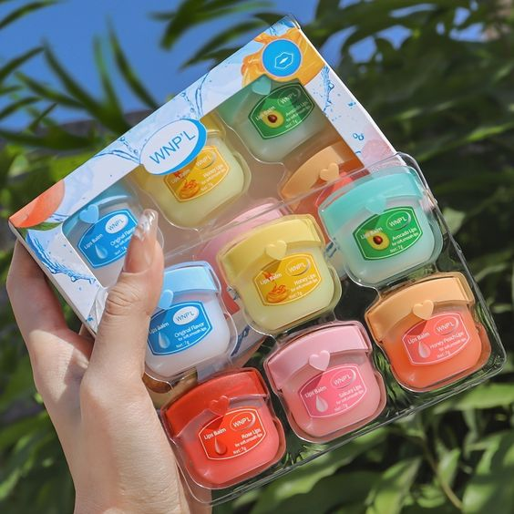
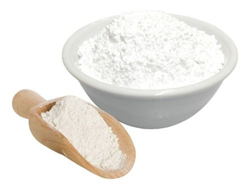
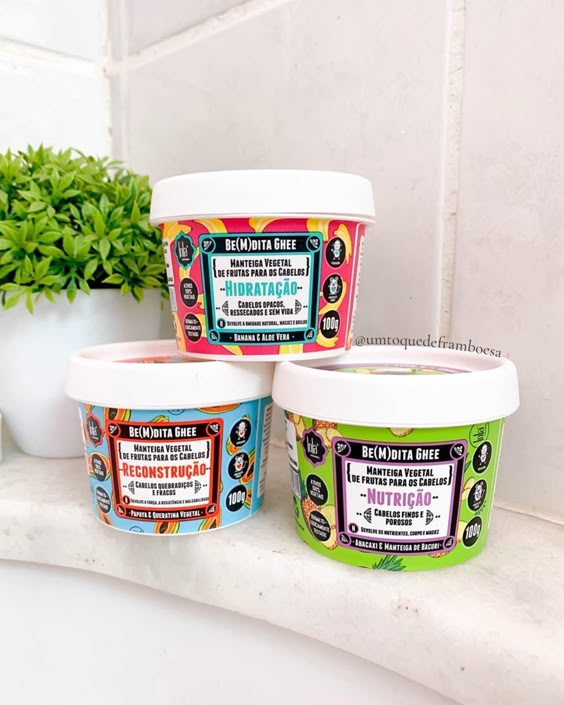

PRODUTOS QUE VOCÊ PRECISA TER
CONFIRA AQUI QUAIS PRODUTOS QUE FAZEM TOTAL DIFERENÇA NO SEU DIA A DIA
★ REPARADOR DE PONTAS
O reparador de pontas é um produto capilar que pode trazer vários benefícios, como: Prevenir pontas duplas As pontas duplas são quebradas e ressecadas, o que pode dificultar o crescimento do cabelo. O reparador de pontas ajuda a unir as pontas duplas e a manter os fios saudáveis. Selar as cutículas O reparador de pontas ajuda a selar as cutículas, que são a parte externa dos fios, e a corrigir a porosidade do cabelo. Proteger contra agressões externas O reparador de pontas protege os cabelos contra agressões externas, como o sol, o cloro da piscina e a ação de produtos químicos. Combater o frizz O reparador de pontas ajuda a controlar o frizz, deixando o cabelo mais bonito e sedoso. Fortalecer fios quebradiços O reparador de pontas ajuda a fortalecer fios quebradiços e a evitar a quebra. Deixar o cabelo mais brilhante O reparador de pontas pode deixar o cabelo mais brilhante e macio. O reparador de pontas pode ser usado diariamente para manter os fios saudáveis e hidratados.
★ LIP BALM
O lip balm (que significa “bálsamo para os lábios'') e o hidratante labial são itens indispensáveis para manter a saúde e a beleza dos lábios. A pele da parte externa da boca é mais fina, sensível e também fica mais exposta ao vento, aos alimentos e às bebidas que consumimos. Nas estações mais frias, é comum perceber os lábios mais ressecados, mas esse problema pode aparecer também no verão. Por isso é tão importante cuidar dessa região com produtos especialmente desenvolvidos para ela, que é o caso dos lip balms e hidratantes labiais. Esses produtos promovem e mantêm a hidratação dos lábios, evitando aquele aspecto ressecado e com rachaduras. Eles também formam uma película protetora contra o vento e a nossa saliva, que tem um pH ácido e pode prejudicar a camada que protege naturalmente a boca.
★ MASSAGEADOR FACIAL

O massageador facial pode trazer vários benefícios para a pele e o corpo, como: Relaxamento A massagem facial alivia a tensão muscular e proporciona conforto à pele. Melhora da circulação sanguínea A massagem estimula a circulação sanguínea, o que aumenta a oxigenação e a nutrição das células da pele. Estímulo à produção de colágeno A massagem facial pode ajudar a estimular a produção de colágeno na pele. Absorção de produtos de skincare A massagem facial potencializa a absorção de produtos de skincare, como cremes e séruns. Redução de inchaço A massagem facial pode ajudar a diminuir o inchaço, principalmente ao redor dos olhos. Suavização de linhas de expressão A massagem facial pode ajudar a reduzir rugas e linhas de expressão. Benefícios para o corpo A massagem facial pode ajudar a aliviar o stress, diminuir a ansiedade, acalmar a mente, ativar a circulação, auxiliar na imunidade e melhorar a qualidade do sono. Existem vários tipos de massageadores faciais, como os rolos de jade ou quartzo e os massageadores faciais elétricos.
★ DOLOMITA
A dolomita é um mineral composto por cálcio e magnésio que oferece vários benefícios à saúde, como: Saúde dos ossos e dentes: A dolomita ajuda a manter a saúde dos ossos e dentes, prevenindo a osteoporose. Saúde muscular: A dolomita pode ajudar a desenvolver e manter a função muscular, aumentando a elasticidade dos músculos em até 30%. Saúde do coração: A dolomita pode ajudar a melhorar a circulação sanguínea, o que é benéfico para o coração. Saúde da pele: A dolomita pode ser usada como máscara facial para clarear manchas, tratar acne, reduzir rugas e linhas de expressão, e melhorar a firmeza e elasticidade da pele. Saúde bucal: A dolomita pode ajudar a tratar mau hálito, afta e gengivite. Saúde do cabelo: A dolomita pode ajudar a fortalecer, reconstruir e revitalizar o cabelo, reduzindo a queda e hidratando. Saúde do sistema digestivo: A dolomita pode ajudar a tratar diarreia, má digestão, gases, gastrite e úlceras. Saúde imunológica: A dolomita pode ajudar a fortalecer o sistema imunológico. Metabolismo: A dolomita pode ajudar a normalizar o metabolismo do organismo.
★ MÁSCARA DE HIDRATAÇÃO
A máscara capilar de hidratação tem vários benefícios, como: Repõe água e nutrientes A máscara de hidratação repõe a água e os nutrientes perdidos pelos fios de cabelo, que são agredidos diariamente por fatores como sol, vento, poluição e ar condicionado. Fortalece os fios A hidratação capilar ajuda a deixar os fios mais fortes e saudáveis, reduzindo a quebra e a queda de cabelo. Protege os fios A máscara capilar cria uma camada protetora que evita que os fios fiquem vulneráveis a agressões externas, como sol, chapinha, secador e procedimentos químicos. Deixa os fios mais macios e brilhantes A máscara capilar deixa os fios mais macios e brilhantes, com menos pontas duplas. Prepara para outros tratamentos A hidratação prepara o cabelo para que ele retenha bem todo o tratamento feito nas outras etapas do cronograma capilar. A máscara capilar é um tratamento profundo para os cabelos, especialmente aqueles mais danificados e ressecados. O ideal é sempre optar pelo tipo certo para o seu cabelo.